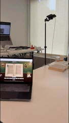
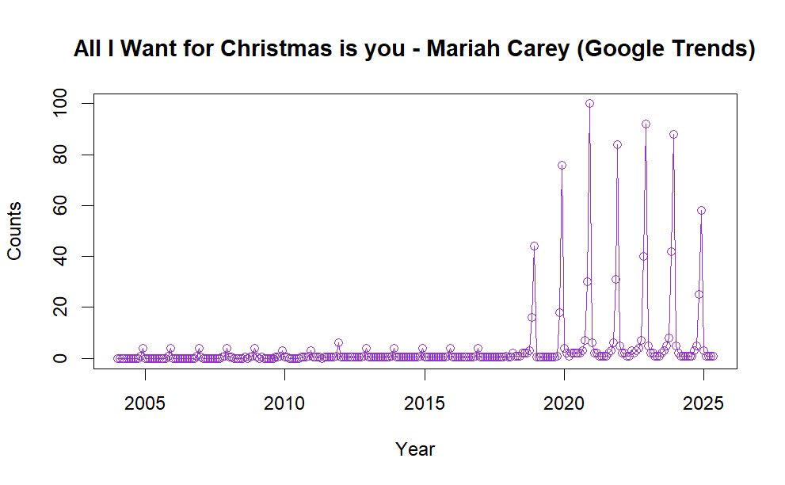

I'm an analytics engineer. I build the data platforms and detection systems that tell teams when something is off.
At Thorogood I led one of four workstreams on a finance controls platform for a Fortune 500 FMCG company, building pipelines across 20+ sources, and built anomaly detection on 30+ business KPIs. Before that, as a business process analyst at Lal PathLabs, I built automation that cut instrument downtime 15% across a diagnostics network serving 26.7 million patients a year.
At UMass Amherst I studied decision analytics: turning what the data says into a decision someone can act on.
It started with controls engineering at NIT Trichy, where everything is a feedback loop: measure the system, notice when it drifts, correct it. That's still how I approach data.
Drop a pin anywhere in New York City and see everywhere you can reach within a time or money budget, with each of 46,792 hexagons coloured by the cheapest way there. It mixes subway, buses, regional rail, ferries, Citi Bike, taxis and Uber, with real fares including OMNY's weekly cap. A city-wide simulation maps where transit gives a lot for little and where the gaps are.
Drop in a CSV and get a full analysis, from cleaning and feature engineering to model comparison and diagnostics. The Python engine runs entirely in the browser via WebAssembly, so the data never leaves your machine. Best results: R² 0.825 on California Housing and 0.838 ROC-AUC on Titanic.
An interactive map of the money behind all 470 U.S. Senate and House races in 2026: what it cost to elect each winner, the spend per vote, and whether outspending the opponent moved voters compared with the 2024 presidential result. A Python pipeline pulls spending from the FEC's OpenFEC API, and the page is plain JavaScript with D3.
Python, D3, OpenFEC API, data visualizationcodelive
BookwormComputer vision & closed-loop control

A robot arm that turns real book pages, then reads them aloud or scans them into a searchable PDF without damaging the book. I built the calibration, the touch-based book model and the adaptive page-flip path. 3rd place, Viam "Code that Moves" Hackathon.
An AI agent that remembers unresolved mistakes across a long task and learns which evidence to check before marking a step done, with memory stored in MongoDB Atlas.
Python, AI agents, MongoDB Atlas, evaluationcodelive
Resumes where every claim can be verified without a phone call, because each one is signed up a chain of trust to a root registry. I built and deployed the verifiable-credential demo, and pitched it at the Minute Pitch startup competition at UMass Amherst. Winner, Trust in the Hiring Funnel track, NYU.
Virginia Tech Business Analytics & AI capstone with a national mobility engineering association. Combined 12,597 event and membership records with Google Trends and scraped Udemy course data to map which engineering topics members want, by state and city, and forecast interest in a Power BI dashboard.
Class term project for Virginia Tech's Business Analytics & AI program. Cleaned and explored five years of pollutant data across 26 Indian cities, then compared five models across four datasets and three train/test splits.
Time Series: All I Want for Christmas Is YouStatistics & forecasting

A small (and fun) time series analysis of Mariah Carey's All I Want for Christmas Is You, using Google Trends data from 2004 to the present. It examines long-term trend and seasonality, and compares classical regression and autoregressive models in R.
R, time series, forecasting, data visualizationcode
Record
Experience
2022 – 2024 · BengaluruData & Analytics Engineer, Thorogood Associates. Led one of four streams of a finance controls platform for a Fortune 500 FMCG company. Built anomaly detection on 30+ KPIs for global teams. Received the Passion and Star awards.
2021 – 2022 · New DelhiBusiness Process Analyst, Lal PathLabs. Built automation systems that cut instrument downtime 15% and technician workload 90% across a diagnostics network serving 26.7M patients a year.
Internship
2020 · New DelhiRobotics Intern, SenseGrass. Modeled faulty telemetry from an agricultural soil-sampling rover.
Education
2024 – 2026M.S. Engineering Management, Decision Analytics. University of Massachusetts Amherst · GPA 3.94